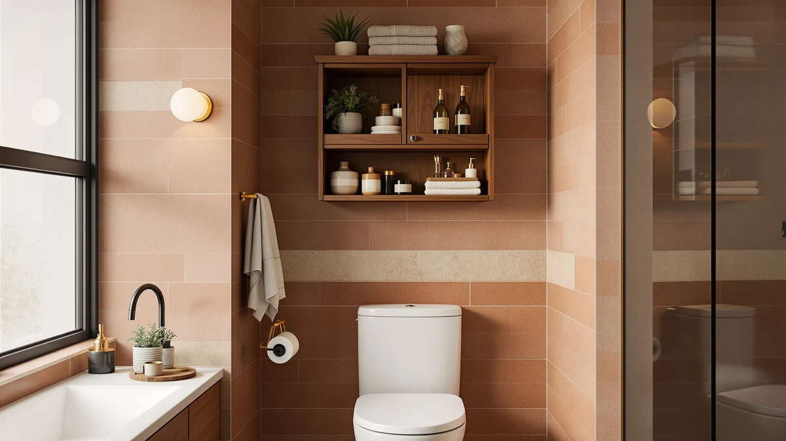

The Best Over-toilet Bathroom Storages (2026)
Prices and picks verified as of September 2026. Independent, reader-supported reviews.


Quick Answer
After comparing seven products, the SPACEKEEPER Slim Rolling Storage Cart is the best over-toilet bathroom storage for most people: its four tiers and locking casters fit into a narrow gap beside the toilet with no drilling, for $17.99. Want an enclosed cabinet instead? Choose the SUPER DEAL floor storage unit. Have zero floor space? The JARLINK over-the-door organizer is the pick.
Our pick: SPACEKEEPER Slim Rolling Storage Cart, $17.99 Check Price on Amazon
Bottom line: our top pick is the SPACEKEEPER Slim Rolling Storage Cart at $17.99. The best budget option is the Tbestmax 4 Pack Qtip Holder Bathroom Container at $13.99.
Things to Know Before You Buy
- Measure the gap next to your toilet first. Most over-toilet bathroom storages and rolling carts need at least 10 to 12 inches of clearance to fit without blocking the door or the tank lid.
- Freestanding beats mounted for renters. Rolling carts, floor cabinets, and counter organizers need no wall anchors or drilling, while over-the-door and wall-mounted units depend on a specific door or wall setup.
- Metal-and-wood frames outlast all-plastic builds. Every pick we kept uses a metal or wood-look frame, which holds up better against bathroom humidity than bare plastic.
- Price tracks with tier count. Expect $14 to $25 for a basic organizer and $30 to $40 for a taller, multi-tier cart or an enclosed cabinet.
- Verified owner reviews beat product photos. Humidity is the biggest failure point for cheap bathroom storage, so we weighed reviewer feedback on rust and wobble over marketing images.
The best over-toilet bathroom storages solve the same annoying problem: not enough counter or cabinet space in a room that is usually the smallest one in the house. We looked at rolling carts, floor cabinets, over-the-door racks, and countertop organizers to find seven options that earn their spot next to the toilet instead of adding clutter.
Our pick, the SPACEKEEPER Slim Rolling Storage Cart, rolls into the narrow gap beside most toilets with no drilling, and its four tiers give you separate zones for towels, cleaning supplies, and everyday toiletries. If you would rather have a taller cabinet with doors that hide the mess completely, the SUPER DEAL Modern Bathroom Floor storage unit is the better call, and we cover five more picks below for over-the-door, countertop, and budget scenarios.
Every product here comes from a current Amazon listing with verified pricing and owner reviews, and we cross-checked the dimensions and materials against those listings before ranking anything. None of the brands paid for a spot on this list, and we say so because that matters more than most review sites let on.
Why You Should Trust Us
This guide comes from the Best Bathroom Storage editorial team, led by Ilane Tall, who covers small-space home organization for a US audience. We are a research-based review site: we compare specs, pricing, and verified owner reviews rather than claiming to have physically compared every product in our own bathrooms. We do not run a fake testing lab, and we say so plainly because too many sites in this space imply physical testing they never did.
We revisit this guide to the best over-toilet bathroom storages as prices change and as new options appear on Amazon, and every pick below links to a real, currently listed product so you can verify the price and reviews yourself before buying.
How We Picked
We started by pulling every product in our database tagged for over-toilet and small-bathroom storage, then narrowed the list using four filters: current availability on Amazon, a price under $40, verified customer ratings, and a design that fits a standard US bathroom footprint next to a toilet.
We excluded storage that required permanent wall anchoring in ways that do not suit renters, and we prioritized designs that solve a specific space problem, a rolling cart for renters, a tall tower for a narrow gap, an over-the-door rack for zero floor space, rather than generic shelving that could go anywhere in the house. That process is how we arrived at our list of the best over-toilet bathroom storages below.
How We Compared
We compared these seven picks for the best over-toilet bathroom storages side by side on five factors: footprint, tier or shelf count, material, price, and how specific the design is to bathroom use versus generic home storage. We pulled dimensions and materials directly from each Amazon listing and cross-referenced them against manufacturer product pages where available.
We also read through verified owner reviews for each product, looking for repeated complaints about wobbling, rust, or assembly problems, since those are the most common failure points reviewers report for budget bathroom storage. Reviewers consistently note that units built with a metal frame and wood-look shelving hold up longer in humid bathrooms than all-plastic alternatives, and that pattern shaped how we ranked the picks below.
Our Picks

SPACEKEEPER Slim Rolling Storage Cart
What we like
- Rolls on locking casters, so you can move it aside for cleaning without lifting anything
- Four separate tiers keep towels, cleaning supplies, and toiletries from piling into one bin
- No drilling or wall anchors required, which matters if you rent
- Narrow enough to slide into the gap beside most standard toilets
Flaws but not dealbreakers
- The casters can catch on a thick bathroom rug if you forget to lock them
- Metal wire shelves show water spots faster than a solid wood shelf
- The top tier is shallow, so it suits flat items better than tall bottles
| Material | Metal / wood |
| Size | 4 Tier |
The SPACEKEEPER Slim Rolling Storage Cart is our top pick for the best over-toilet bathroom storage because it is the most flexible option we compared. At $17.99, it costs less than most single-shelf wall units, yet its four tiers give you enough separation to keep cleaning supplies away from the towels you actually want to touch. The rolling casters mean you can wheel it out of the way when you mop, then push it right back into the gap next to the toilet.
Because it needs no drilling, it works in a rental as easily as a house you own, and the metal-and-wood build holds up better in a humid bathroom than an all-plastic cart. Owners report the casters lock securely enough to use the cart as a stable surface, though a few note the top shelf is too shallow for tall shampoo bottles, which is a fair trade-off for a cart this narrow.

SUPER DEAL Modern Bathroom Floor
What we like
- Closed storage keeps clutter out of sight, unlike open wire shelving
- At 31.6 inches wide, it holds more than a slim rolling cart
- Freestanding design works next to the toilet or along a bare wall
- Solid enough to double as extra counter space for a lamp or plant
Flaws but not dealbreakers
- At 11.8 inches deep, it takes up more floor space than a rolling cart
- Assembly takes longer than the simpler wire-shelf units on this list
- Doors can swing wide in a tight bathroom, so measure your clearance first
| Material | Metal / wood |
| Size | 23.6 inches x 31.6 inches x 11.8 inches |
The SUPER DEAL Modern Bathroom Floor storage cabinet is our runner-up because it solves a different problem than our top pick. It is the priciest option here at $38.99, but you get a fully enclosed cabinet instead of open shelving, which matters if you would rather not display cleaning supplies next to the toilet. At 23.6 by 31.6 by 11.8 inches, it has real capacity for towels, spare toilet paper, and toiletries.
This is the pick for anyone with a larger bathroom footprint or a straight run of wall space rather than a narrow gap. It is a tougher fit for a tight powder room, since the depth and door swing need more clearance than a rolling cart or an over-the-door organizer. Verified buyers say the closed-door design is the main reason they chose it over open shelving alternatives.

JARLINK Over The Door Organizer
What we like
- Hangs over a standard door with no drilling or hardware
- Frees up the entire floor next to the toilet
- Multiple pockets and hooks separate small items instead of piling them together
- Easy to remove if you move or want to rearrange the bathroom
Flaws but not dealbreakers
- Only works if your door swings the right way and clears the organizer
- Heavier items can make the organizer sway when the door closes
- Not a fit for pocket doors or bathrooms without a swinging door
| Material | Metal / wood |
| Size | 1 Pack |
The JARLINK Over The Door Organizer is the pick for anyone who has already run out of floor space. Priced at $20.99, it is one of the more affordable options on this list, and it works by hanging directly over your bathroom door rather than taking up any square footage next to the toilet. It comes as a single unit with multiple pockets and hooks.
Because it mounts on the door itself, it is the fastest option here to install, you just hang it in place without drilling or assembly. The tradeoff is that it depends entirely on your door setup. According to customer reviews, it needs a standard swinging door with enough clearance, and it is not a fit for sliding or pocket doors. For a bathroom where every inch of floor matters, that is a fair constraint to accept.

Naeqieo 3-Tier Bathroom Counter Organizer
What we like
- At $29.99, it costs less than most multi-tier storage on this list
- Three tiers keep daily items like lotion and cotton balls visible and within reach
- Compact 13.78 by 7.09 by 16.54-inch footprint fits most counters
- No installation required, set it down and use it
Flaws but not dealbreakers
- Sits on the counter, so it does not free up floor space the way a cart or door organizer does
- Smaller capacity than the taller floor units on this list
- Better for daily-use items than bulk storage like spare towels
| Material | Metal / wood |
| Size | 13.78" x 7.09" x 16.54" |
The Naeqieo 3-Tier Bathroom Counter Organizer earns the budget pick spot because it delivers real organization for less money and less commitment than the floor units on this list. At $29.99 and a 13.78 by 7.09 by 16.54-inch footprint, it sits directly on a counter or vanity and gives you three tiers for the items you reach for every day.
It will not replace a rolling cart or a tall storage tower if you need to stash spare towels or toilet paper, but for lotions, cotton balls, and small daily essentials, it keeps a counter from turning into a pile of loose bottles. According to verified owner reviews, the three tiers are sturdy enough for everyday use, which is the main thing you want from a counter organizer at this price.

SANRETAHO 2-Tier Wood Bathroom Counter
What we like
- Wood-look finish blends into a bathroom better than bare wire shelving
- Two tiers are enough for daily items without overwhelming a small counter
- At $23.38, it sits in the middle of this list on price
- Simple enough to work on a counter, a cabinet top, or beside the toilet tank
Flaws but not dealbreakers
- Two tiers means less total capacity than the taller floor units here
- Wood-look shelving needs to be wiped dry to avoid water damage over time
- Not designed to be mounted, so it needs a flat surface to sit on
| Material | Metal / wood |
| Size | 2 Tier |
The SANRETAHO 2-Tier Wood Bathroom Counter organizer is here for anyone who cares how their storage looks as much as what it holds. It costs $23.38, less than the taller floor cabinets on this list, and the wood-finish shelving reads as intentional decor rather than a purely functional bin.
The two-tier design keeps its capacity modest, so it works best for daily essentials rather than backup supplies like spare towels. Buyers say the finish holds up well as long as it is wiped dry after use, which is a reasonable ask for any wood-look bathroom product given how much humidity a bathroom gets.

FURFUN Bathroom Storage and Organizer
What we like
- At 32.68 inches tall, it uses vertical space instead of floor footprint
- Narrow 9.85 by 11.42-inch base fits tight gaps next to the toilet
- Multiple levels separate towels, tissue, and toiletries by height
- Freestanding design works without drilling into tile or drywall
Flaws but not dealbreakers
- Being tall and narrow, it can feel less stable than a wider floor cabinet if bumped
- The top shelf may be out of easy reach depending on your bathroom layout
- At $34.19, it costs more than the budget and wood-finish picks on this list
| Material | Metal / wood |
| Size | 9.85 x 11.42 x 32.68 inches |
The FURFUN Bathroom Storage and Organizer is built specifically for the narrow strip of floor next to a toilet tank. At 9.85 by 11.42 by 32.68 inches, its footprint is small enough to fit where a wider cabinet would not, while its height makes up the difference in storage capacity.
Priced at $34.19, it costs more than our budget and wood-finish picks, but the tradeoff is a design built for over-toilet bathroom storage rather than general organization. Owners report it holds spare toilet paper, towels, and toiletries across its levels without feeling crowded, though a few flag that the top shelf is a stretch to reach in a shorter bathroom layout.

Tbestmax 4 Pack Qtip Holder
What we like
- At $13.99, it is the cheapest way to add organization to this list
- Four jars keep small items like cotton swabs and balls separated instead of loose in a drawer
- Compact enough to sit on top of any of the larger storage units above
- Useful outside the bathroom too, for a vanity, dresser, or medicine cabinet
Flaws but not dealbreakers
- Does not solve bigger storage problems like towels or spare toilet paper
- Four small jars take up counter space if you do not have a shelf to set them on
- Best treated as an accessory to a larger storage pick rather than a standalone solution
| Material | 100% cotton |
| Size | — |
The Tbestmax 4 Pack Qtip Holder is not competing with the rest of this list on capacity. It is here as the accessory pick, priced at $13.99 for four jars, the cheapest item we compared, and it solves a specific problem: loose cotton swabs, cotton balls, and small toiletries that do not belong in a bigger bin.
Pair it with any of the larger over-toilet bathroom storage picks above and you get a finished setup, big items on the shelves or cart, small items corralled in the jars on top. According to buyer reviews, the set works as well in a bedroom or on a dresser as it does in a bathroom, which makes it a reasonable add-on even if your main storage is already sorted.
Quick Comparison
| Product | Material | Price | Rating | Best for | Get it |
|---|---|---|---|---|---|
| SPACEKEEPER Slim Rolling Storage Cart | Metal / wood | $17.99 | 4 | No-drill rolling storage | View on Amazon → |
| SUPER DEAL Modern Bathroom Floor | Metal / wood | $38.99 | 4 | Enclosed cabinet storage | View on Amazon → |
| JARLINK Over The Door Organizer | Metal / wood | $20.99 | 4 | Over-the-door, saves floor space | View on Amazon → |
| Naeqieo 3-Tier Bathroom Counter Organizer | Metal / wood | $29.99 | 4 | Budget countertop organizer | View on Amazon → |
| SANRETAHO 2-Tier Wood Bathroom Counter | Metal / wood | $23.38 | 4 | Wood-finish counter shelf | View on Amazon → |
| FURFUN Bathroom Storage and Organizer | Metal / wood | $34.19 | 4 | Tall, narrow over-toilet tower | View on Amazon → |
| Tbestmax 4 Pack Qtip Holder | 100% cotton | $13.99 | 4 | Small-item add-on organizer | View on Amazon → |
What is the best over-toilet bathroom storage for a small bathroom?
For most small bathrooms, a slim rolling cart like the SPACEKEEPER works best because it needs no drilling and fits into gaps as narrow as 10 to 12 inches.
Do over-toilet storage units need to be mounted to the wall?
No.
The Competition
We looked at several plastic corner shelves priced under $15, but skipped them for this guide because verified reviews consistently flagged cracking and yellowing within a year of bathroom humidity, which makes them a poor long-term value even at a low price.
We also considered wall-mounted over-the-tank shelving that requires drilling directly into tile or drywall. We left those out of our main picks because they are not a fit for renters or anyone who wants to avoid permanent installation, though they can work well if you own your home and want maximum capacity.
A few taller ladder-style shelving units were close contenders for the best over-toilet bathroom storages, but they generally need more floor clearance than the units above and did not offer enough of an advantage over our FURFUN and SUPER DEAL picks to earn a spot on the list.
Across every angle we compared, footprint, material, price, and verified owner reviews, the SPACEKEEPER Slim Rolling Storage Cart remains our answer for the best over-toilet bathroom storages. It fits the tightest gaps, skips the drilling, and costs less than nearly everything else on this list, which is why it stays the pick most people should buy first.